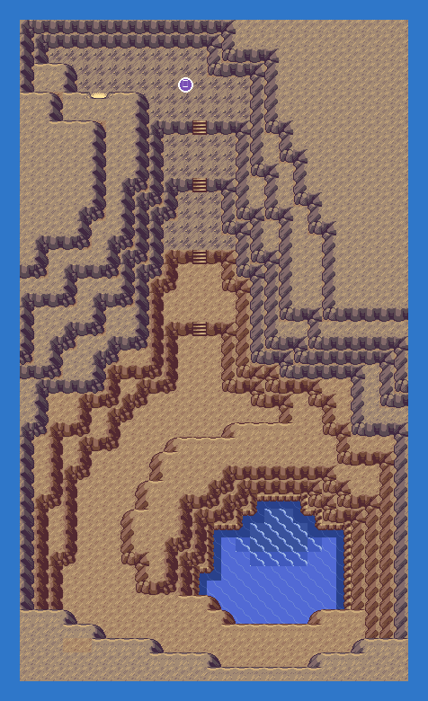
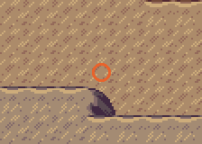
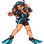
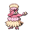
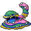
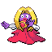
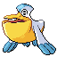

PokémonEMMA'S EMERALD
OFFICIAL Strategy Guide
Seafloor Cavern Room9
TIP
No wild Pokémon in the grass here. Time of day: M = morning (6–10), D = day (10–19), E = evening (19–20), N = night (20–6).
Event 1: Kyogre

UNC G stands before the sleeping Kyogre. She has been to every coast twice and wants a sea with no edges. Fight her: Gyarados, Oricorio in its Pa'u style, Alolan Muk and Jynx. Third UNC G fight. Then the Red Orb wakes Kyogre and the rain begins.

CAUTION
Alolan Muk is Poison/Dark: only Ground hurts it much. Gyarados fears Electric. Bring Full Heals for Lovely Kiss.Battle
| Jetsetter UNC G Normal  Gyarados LV41 Water  Oricorio-Pau LV42 Psychic  Muk-Alola LV43 PoisonDark  Jynx LV44 IcePsychic Hard  Pelipper LV42 Water Damp Rock Gyarados LV43 Water Sitrus Berry Oricorio-Pau LV44 Psychic Life Orb Muk-Alola LV44 PoisonDark Black Sludge Jynx LV45 IcePsychic Focus Sash Easy Gyarados LV38 Water Oricorio-Pau LV39 Psychic Muk-Alola LV40 PoisonDark Jynx LV41 IcePsychic |
75